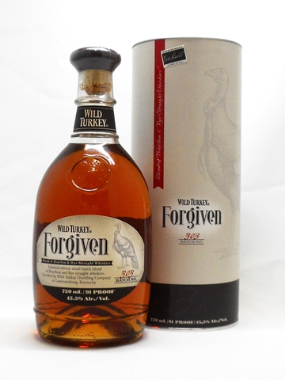

… Whisky …

----- Forgiven -----
従業員が完成したバーボンウイスキーに誤ってライウイスキーを混ぜてしまう、
という偶然のアクシデントから生まれた商品です。バニラのような香りで、クリーミーな甘さとスパイシーな味わいが特長です。
当初はマスターディスティラーも大変な損失に繋がると怒っていたようですが、
そのウイスキーの出来栄えの良さにそのミスをしてしまった従業員を許し『Forgiven=許された』という商品名でボトリングを行いました。
※こちらで紹介しているのはあくまでウイスキーです。
決してどこかのCPを示すものではございません。
-----NEWS-----
▷▶︎▷ 2018/5/28 New arrival → 『Forgiven』
▷▶︎▷ 2018/5/25 Online shop open ... ?
▷▶︎▷ 2018/5/22 This site open !

© Organization of black.